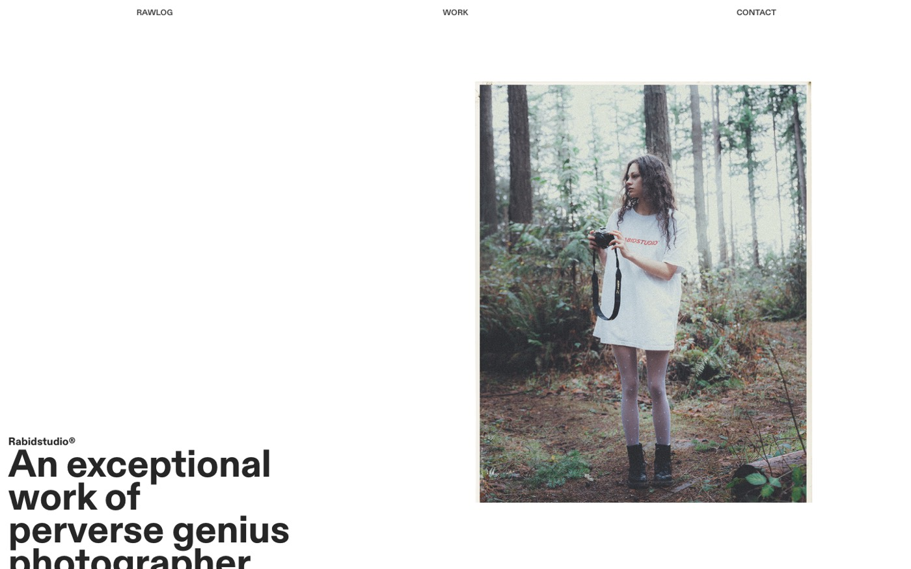
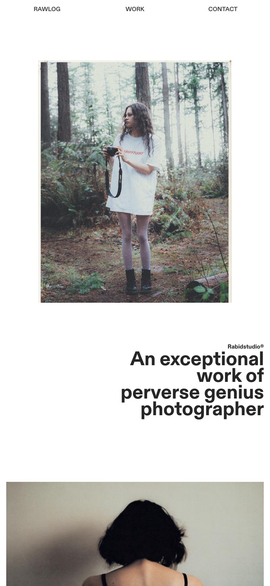
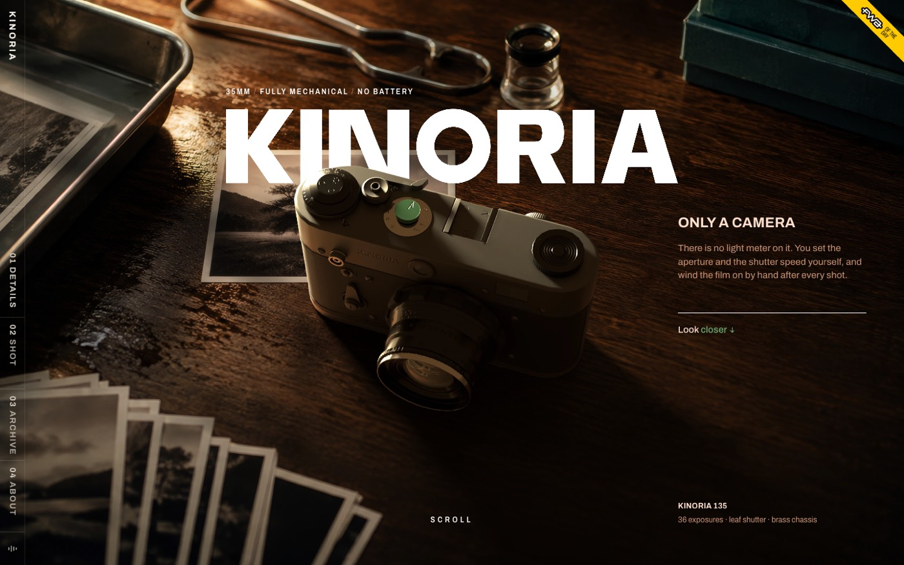
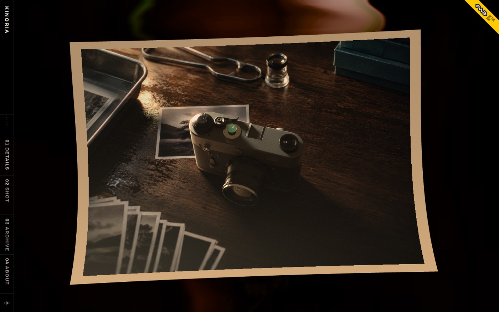
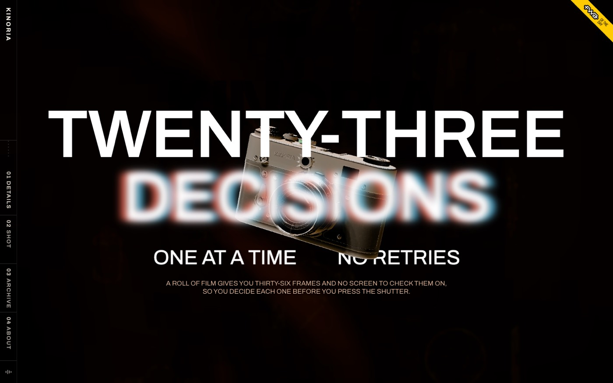
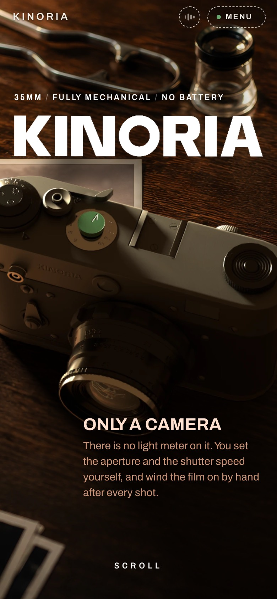
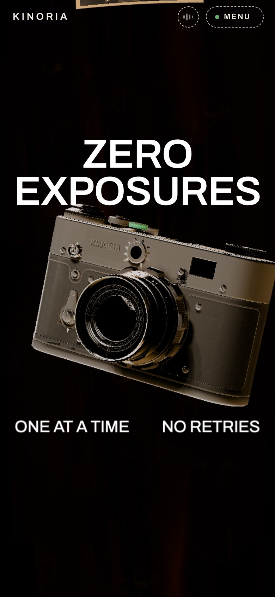

RIMFIT
현재 가장 중요한 과제입니다. 사이트와 SNS에 함께 활용할 사진·영상을 정기적으로 제작하는 체계를 만드는 것을 우선으로 제안드립니다.
지금은 큰 공사 없이 방향성 합의와 기본 정비까지 진행하고, 리뉴얼은 콘텐츠가 쌓인 뒤 단계적으로 확장합니다.
정기 촬영 시간 확보, 기본 촬영 장비, 대표님의 스타일링 참여, 콘텐츠 예산 범위 결정이 필요합니다.
사진작가의 포트폴리오(작업물 모음) 겸 온라인 매거진 용도의 사이트로, 룩북·매거진 느낌의 사이트를 지향하는 기획 방향에 대한 레퍼런스입니다.
작업물을 나열한 WORK 메뉴와 작가 소개 및 협업 문의 창구인 CONTACT 메뉴 모두 작가 본인의 아이덴티티가 담긴 유니크한 분위기로 구성되어 있습니다.


디자인 요소가 강한 웹사이트로, 쇼핑몰 역할에 국한되지 않고 볼거리와 사이트 자체의 재미 요소를 부여하고자 하는 기획 방향에 대한 레퍼런스입니다.
특히 스크롤 액션(화면을 아래로 내릴 때마다 적용되는 애니메이션)과 콘텐츠별 재미 요소, 호버 액션(마우스 커서를 갖다 대면 나타나는 숨은 장치)이 특징입니다. 사진이나 영상을 단순히 목록으로 보여주는 데 그치지 않아, 고객이 사이트에 접속하는 것만으로도 한 편의 체험형 전시를 관람하는 듯한 효과를 줍니다.





현재 사이트는 카페24로 운영되고 있으며, 별도의 서버 구축 없이 아래 범위까지 구현할 수 있습니다.
전면 커스텀이 가능하며, 스크롤 액션·호버 액션·이미지 슬라이드·영상 배치 등 레퍼런스 수준의 연출을 적용할 수 있습니다.
별도 페이지로 제작할 수 있습니다. (현재 사이트의 SHOWROOM 메뉴를 확장하는 방식)
카페24 기본 기능을 유지하되, 디자인(글꼴·여백·색감)을 룩북 분위기에 맞게 정리합니다.
관리자 화면에서 자유롭게 추가 및 변경할 수 있습니다.
사이트와 SNS 모두에 활용할 사진·영상 콘텐츠는 현재 가장 집중해야 할 부분입니다. 콘텐츠가 꾸준히 쌓이면 사이트 리뉴얼 시에도 그대로 활용할 수 있습니다.
대표님께서 자주 공유해주신 인스타그램 릴스 레퍼런스 계정입니다.
인스타그램 릴스 레퍼런스
인스타그램 릴스 레퍼런스
두 계정에서 림핏 콘텐츠에 가져오고 싶은 요소를 아래 항목 중에서 골라주시면, 이를 기준으로 촬영 기획안을 구체화하겠습니다.
15~30초 길이의 착장·코디 영상입니다. 주 2회 · 인스타그램 릴스, 사이트 메인 영상
시즌 분위기를 담은 화보 촬영입니다. 시즌별 1회, 20~40컷 · 사이트 SHOWROOM, 인스타그램 피드, 메인 배너
착용 컷과 디테일 컷입니다. 신상품 입고 시 · 상품 상세 페이지
매장 일상, 입고 현장, 촬영 비하인드 등 가볍게 올리는 콘텐츠입니다. 수시 · 인스타그램 스토리
촬영 한 번에 영상과 사진을 함께 확보하여, 아래처럼 여러 채널에 나누어 활용하는 방식을 제안드립니다. 촬영 횟수 대비 효율이 가장 높은 방식입니다.
기획·촬영·편집을 내부에서 진행합니다. 비용이 가장 적고 빠르게 대응할 수 있으나, 담당자의 시간이 많이 필요합니다.
릴스·상품 사진 등 일상 콘텐츠는 자체 제작하고, 퀄리티가 중요한 시즌 룩북 화보만 외주로 진행합니다. 비용과 퀄리티의 균형이 가장 좋습니다.
모든 콘텐츠를 외부 업체에 맡깁니다. 퀄리티는 안정적이나 비용이 크고, 매장 분위기를 빠르게 반영하기 어렵습니다.
아래 금액은 일반적인 시장 범위를 기준으로 한 대략적인 예상치이며, 실제 금액은 업체·조건에 따라 달라질 수 있습니다. 진행이 결정된 항목은 업체 견적을 비교한 뒤 다시 보고드리겠습니다.
콘텐츠는 한 번에 잘 만드는 것보다 꾸준히 올리는 것이 가장 중요합니다. 이를 위해 아래와 같은 역할 분담을 제안드립니다.